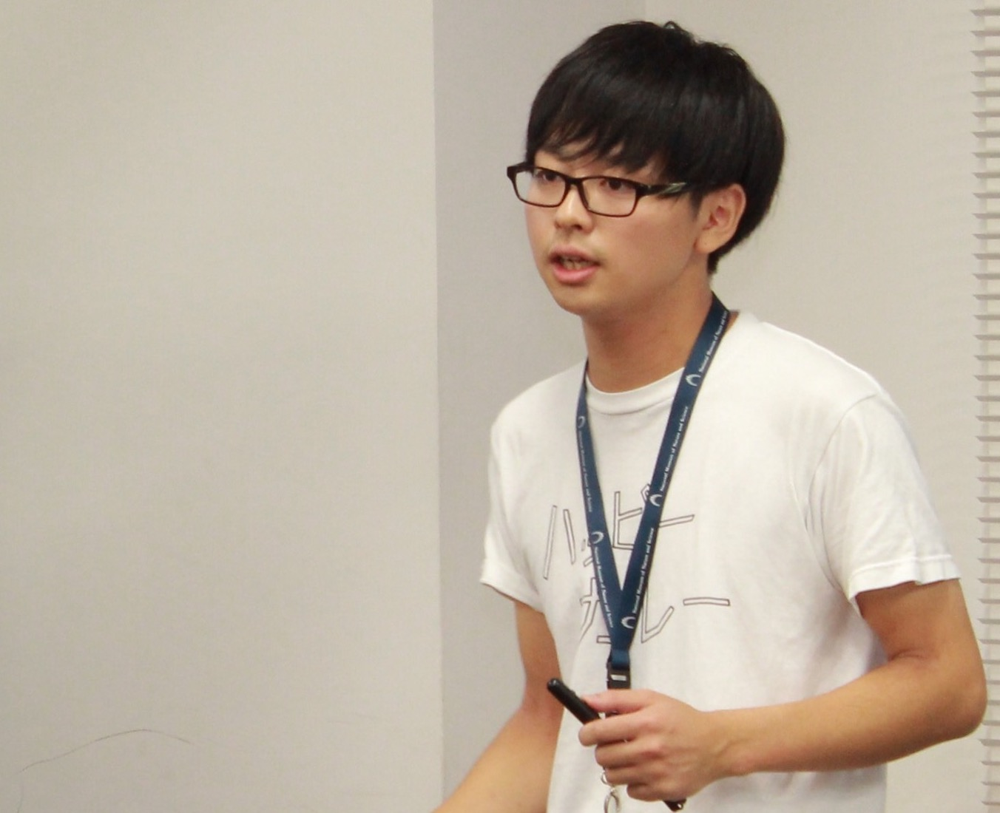

編入する高専生のための
チェックリスト
チェックリスト
本資料はなんのためにあるのか
「それ編入する前に知りたかったわー！」
といった経験を多くの高専からの編入生がしてきました。
高専からの編入は多数派になりつつありますが、まだまだ情報は不十分です。知らなかったことによる不幸は、経験しない方が良いはずです。
そこで、高専出身編入生たちの「それ編入する前に知りたかったわー！」的な意見を集め、リスト化してみました。
ぜひ、編入前のチェックリストとして、「自分の編入する大学は大丈夫かな？」と確認してみてください。
5年間在籍した高専を離れ、新しい生活に挑戦するのはワクワクしますね！でも、不安なことも多いかと思います。ぜひそんな時は、ZENPENをはじめとした多くの高専出身の先輩を頼ってみてください！
作成者
鈴木駿太（@ShuntaSuzuki92）
群馬高専物質→東工大生命→東工大院生命→バイオベンチャー→人がどのようにしたら最短効率で学べるのか考える仕事。高専からの大学編入をテーマにZENPEN （@zenpen_hennyu）を設立したりしました（今は隠居）。高専界隈においてゆるふわに活動しています。
- 勝手に高専ラジオに出演したので聴いてね：こちら
- 本資料の記載内容において、事実誤認や表現の誤りがありましたら、TwitterのDMよりご連絡ください。
- Special Thanks to @nomore_more_ and @takudooon
単位認定とは？というかそもそも単位とは？
編入を目指そうとすると、当たり前のように単位認定という言葉が飛び交います。みなさん単位って知ってます？僕は大学に編入するまで知りませんでした。
実は高専も単位制ではありますが、そもそも9割型の教科が必修科されているような形なので、単位という言葉を聞いてもあまりしっくりこないと思います。
そこで、単位と単位認定という雑な資料を作成しました。単位認定って何？という方はまずはこちらをご覧ください。
編入前チェックリスト
お待たせしました、本題に入ります。こちらは複数の高専出身編入生からご意見いただいたものを、作成者の方で加筆修正を行ったものです。
ぜひ、みなさんの編入先に、以下のような点を確認してみてください！
単位はどの程度認定してもらえるか
奨学金の制度
強制留年は無いか
研究室配属の時期
編入生の割合や事例
学費
第二外国語の単位変換
体育の単位変換
大学が提供する設備
教職課程のレギュレーション
各項目の詳細を以下に列挙します。
単位はどの程度認定してもらえるか

編入後に認定される単位は、同じ大学でも学科ごとによって大きく異なることがあります。認定単位が少なければ3年次に多くの授業をとることになり非常に忙しくなります。編入先の大学や、志望大学の過去事例を確認しましょう！
※単位認定については上記をご覧ください。
奨学金の制度

学生支援機構の奨学金（いわゆる、最もポピュラーな貸与型奨学金）であれば、編入学手続きと同時に案内してもらえることがあります。
しかし、奨学金制度は学生支援機構にとどまらず、多くの財団が提供しており且つ給付型も用意されていることがあります。編入前に、どのような奨学金を受けることができるのか、調査・確認をしておきましょう！
強制留年

例えば、編入先の大学で4年次に上がるために取得する必要のある必修科目が複数あったとします。
3年次にそれら必修科目を履修すれば良いのですが、それらの開講される時間が被っていたらどうなるでしょうか？
内部生（1年生からその大学にいる学生）は、それを見越して1~3年次の間でそれら必修科目を履修します。一方、編入生には3年次の1年間しか時間の猶予はないです。
そう、必修単位が足りず強制的に留年となります（3年次を2回過ごさないと、4年次に上がるために必要な必修科目が履修できない）。
編入生を多く受け入れている大学では、柔軟に対応してもらえたり、そもそもそうならないように仕組みを作っていてくれたりします。
また、4年次に上がるまでに必要な単位数を3年次の１年間で取得することが物理的に難しい場合は、2年次編入という制度をとる大学があります（東大など）。これは3年次を2回繰り返す「留年」というレッテルを避けるための制度となります。
特に、編入生が少ない大学や学科では要注意です！少しでも心配がある場合は、必ず確認しましょう！
※留年の場合、学費免除や奨学金を受ける資格も無くなることがほとんどです。
研究室配属の時期

一般的には研究室配属は4年次からですが、私立大学の場合は3年次の途中から研究室配属が始まることがあります。また、国立大学でも昨今の教育改革の影響で、3年次から研究室に仮配属等をされることがあります。
研究室配属の時期および希望配属先を決める時期を確認し、顕著に早い時期で選択が迫られるようであれば、事前に研究室調査などを始めましょう！
編入生の割合や事例

編入生の先輩の存在は、編入試験前よりも、むしろ編入試験合格後に頼りとなります。その大学に編入生の先輩はいるのか、編入生会のような組織はあるのかを確認しましょう！
その大学での単位の取り方、編入生にまつわるローカルルールなど、編入学前後に必要となる情報を受け取ることができます。
※見つけ方がわからない場合は、ぜひZENPENなどにご相談ください。Twitterでの呼びかけなどでは協力できるかと思います。
※もし編入生会などの組織がない場合は、ぜひあなたが作ってください！それはこれから入学してくる高専生の後輩のためです。
学費

年間にかかる学費、およびその支払い時期を明確にしておきましょう。支払いが滞ると、大学を「除籍」となることがあります。除籍は中退とは異なり履歴書にも書きにくくなるので、要注意です。
第二外国語

第二外国語は、その大学で行われている言語しか、単位認定されない場合があります。珍しい第二外国語の授業がある高専では要注意です。
体育

高専4~5年生時に体育を履修しないと、体育が単位認定されず、編入してから大学1年生に混ざって体育をすることになります。
特に、大学の1年生と3年生ではキャンパスが異なることも多く、体育のための移動が必要となることがあります。体育の単位認定については特に確認しておきましょう！
大学が提供する設備

どのような設備があるか確認しましょう。
例えば実習のレポートを印刷するためのプリンターなどは、大学のものが使用できる場合があり、自前で購入する必要はなかったりします。
教職課程

編入前の提出資料に、教職の課程（教員免許を取るための課程）を履修するかしないかのアンケートが同封されていることがあります。
教職課程を履修した場合は出席するべき授業が大幅に増えるため、スケジュールの調整が他の編入生と異なることがあります。 履修を希望する場合は、事前に大学側に確認しておきましょう！
編入生の情報提供お待ちしております！
高専生の後輩に向けて、「これ事前に確認しておいてー！」という情報をお持ちでしたら、ぜひTwitterのDMにて情報をいただければ幸いです。よろしくお願いいたします！
高専の先生・職員の皆様へ
時代が移り変わっていくにつれて、これまで編入組が少なかった高専においても徐々に編入を目指す学生が増えつつあるかと存じます。
そのような高専出身の学生は、情報弱者に陥りやすく、編入後も事前に情報を知らなかったがために、他の編入生と比較して多くの機会損失を経験することがあるかと存じます。
即戦力人材を育成することが高専設立の当初の目的であったかと思いますが、高専卒業後に大学に編入学し、その分野を極め、活躍の幅を広げることも、最終的に高専の価値向上に繋がると考えております。
ぜひ編入を志す高専生が不利益を被ることがないよう、本資料の拡散およびアップデートへのご協力をいただければ幸いでございます。どうぞ宜しくお願い申し上げます。